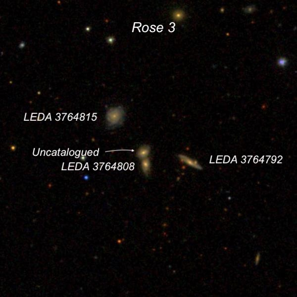
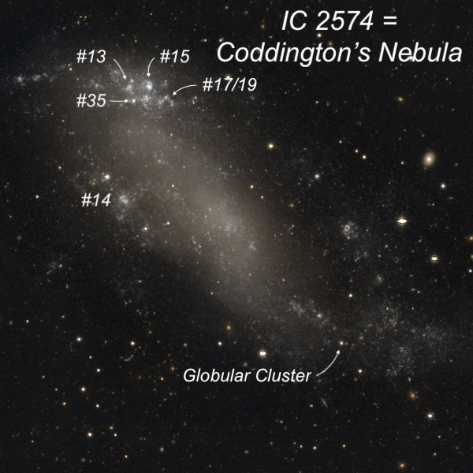
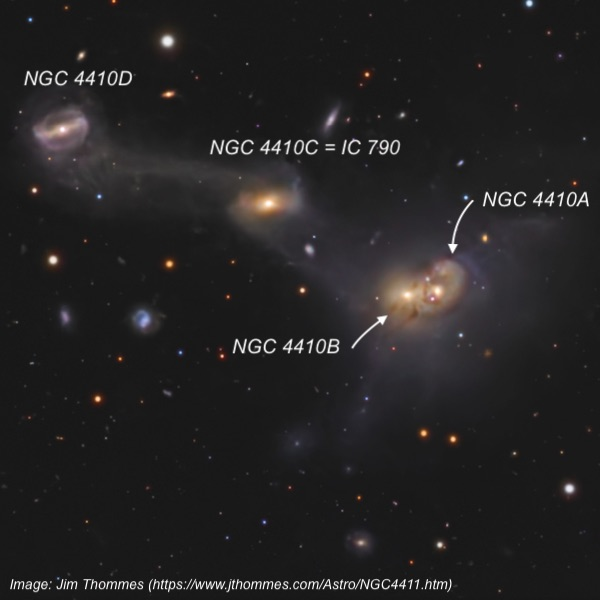
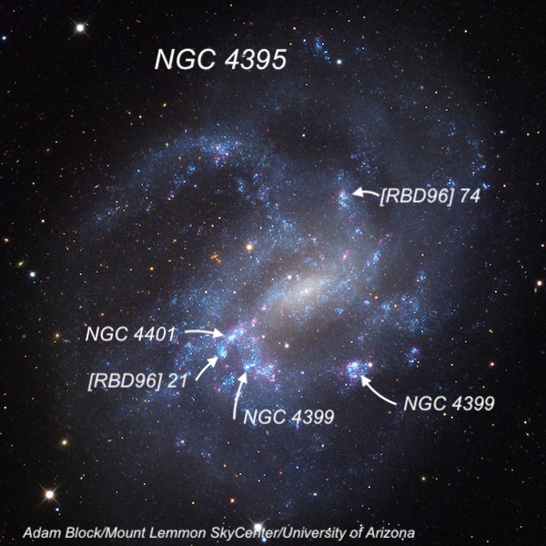
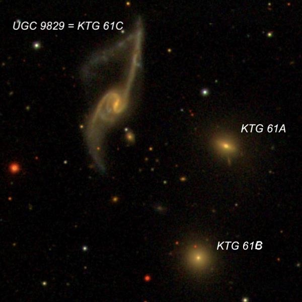
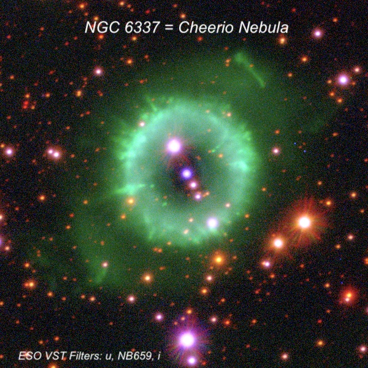

Deep Sky Delights from Texas – Part II
Thursday was cloudy so we weren’t able to do any observing. During the day, Scott Harrington, a young contributing editor to Sky & Telescope magazine, and Brent Archinal, a retired astrogeologist, came over for a few hours to socialize, and Jimi invited them to observe with us on Saturday night. After dinner in town at the Harvard Hotel, Akarsh returned to the star party, while Jimi, Howard, and I hung around at the house and swapped stories.
On Friday, the forecast wasn't very promising for observing, though it appeared we might get in a couple of hours from either 10:00 to midnight, or perhaps midnight to 2:00 AM, during breaks in the clouds. We went up to the observatory, but Jimi immediately discovered he had to realign the scope as the Argo Navis displayed an encoder error message. After finishing the alignment around 11:00, we started off with a mesmerizing view of M51 as the skies were clearing.
Overall, the seeing was average during the night, but it was plenty dark. Howard recorded several SQM readings in the 21.84-21.87 range, with a maximum of 21.91.We observed from 11:00 until 4:15 and I logged a total of 32 objects within a dozen fields.
The Rose 3 quartet in Leo is a tiny group only 1.2' across, with the four members between V = 16.4 to 16.7. At 619x, they all appeared faint or very faint and about 10" in diameter. The group lies about 1.25 billion light-years away, which accounts for their faintness

I requested to view IC 2574 or “Coddington’s Nebula,” a dwarf irregular galaxy and a member of the M81 group. Edwin Coddington discovered it at Lick Observatory on a plate taken in April 1898 of the M81/82 region. Coddington and William Hussey observed it visually soon afterward using the observatory's 12-inch refractor. Coddington mentioned it appeared “large, irregular, very faint, and composed of a number of condensations.” The condensations are actually giant star-forming H II regions (see image below).
I had previously logged at least 4 knots at the northeast edge of the galaxy, but this time added #14, which appeared as a faint, fuzzy spot about 12" diameter. Immediately after this sighting, clouds in the north obscured the galaxy and the others didn’t have a chance to take a look. But we returned to the galaxy two nights later, and we all were able to view its magnitude 17.5-18 globular cluster. As faint as it appeared, this tiny speck is really a giant cluster, with an absolute luminosity (-10.4) comparable to Omega Centauri.

Akarsh requested to see a chain of galaxies in Virgo known as MKW 3 or WBL 360, which I had previously viewed in my 24-inch. It includes five CGCG galaxies in a north-south chain and eight galaxies overall in a single field.
I wrote about NGC 4410 and companions in the May issue of Sky & Telescope in an article titled “Seeing Double: Try to resolve these close galaxy pairs.”
NGC 4410A and NGC 4410B are a merging duo, only 19′′ apart, with multiple tidal tails and plumes. Radio and optical studies reveal that NGC 4410A is encircled by a ring of star-forming H II regions, likely sparked by a head-on collision with NGC 4410B. The pair has ensnared two neighbors to the east in a stunning four-galaxy chain. A broad tidal bridge links to NGC 4410C, and yet another bridge ties NGC 4410C to NGC 4410D.
Using 610x, NGC 4410A appeared fairly bright and round, with a brighter nucleus. A diffuse tidal arm was visible at the west end. The arm wrapped around the galaxy counterclockwise to the north side. This gave the galaxy a “shrimp-like” appearance with a tight, curling tail. NGC 4410B is attached at the east end. It appeared bright, slightly elongated E-W, about 30" diameter, with a brighter nucleus. Both NGC 4410C and NGC 4410D were also logged.

To use one of Jimi Lowrey’s southern expressions, NGC 4395 is “more screwed up than a soup sandwich.” John Herschel thought it was two nebulae “running together,” while the observers at Birr Castle in Ireland, using Lord Rosse’s 72-inch Leviathan, said it was four nebulae in a mass of faint nebulosity. NGC 4395 is classified as a Magellanic Spiral with several low surface brightness arms punctuated by brighter H II knots – three with NGC designations.
We viewed NGC 4395 both with a galaxy contrast enhancement filter at 375x and at 610x unfiltered. It appeared as a sprawling, irregular low-surface-brightness mess with several bright HII clumps. At least five HII regions were seen across the face of the galaxy including three prominent ones: NGC 4399, 4400, and 4401.

UGC 9829 looks terribly wrong. It has a long, straight tidal tail that shoots north for quite a distance, but then it appears someone snapped it half with the other piece dangling to the lower left (southeast). Using 610x, UGC 9829 contained a bright oval core oriented north-south, about 20" in length. A fairly faint, long thin tidal arm is attached on the northwest side. It was easily seen to extend north for about a 1’ in length, but only 0.1’ in width. A broader, but shorter, arm is attached at the southeast end, extending to the south and dimming out after a shorter distance. Two elliptical galaxies share the same field, with the trio known as KTG 61. Unfortunately, the broken off section wasn’t visible.

NGC 6337 in Scorpius is known as the “Cheerio Nebula”. John Herschel described it well as “A beautiful delicate ring, of a faint ghost-like appearance, about 40" diameter; in a field of about 150 stars, 11 and 12 mag and under.”
At 610x, NGC 6337 was a prominent annular planetary with a relatively thin outer ring and a large, fairly dark central hole. The 45" annulus has a bright magnitude 12.8 star at its inner edge on the NNE side and a fainter 14th magnitude star embedded in the ring on the SSW end. The 15th-magnitude central star was easily visible, along with another star just 4" SSW. Both of these stars are aligned with the two brighter outer stars.
The annulus appeared brighter in a 45° arc on the NE side (near the bright star, seeming to form a wedge). A small section of the rim was also brighter and slightly thicker on the WNW side. At this point, it was about 4:15, and we called it quits.
To be continued…
